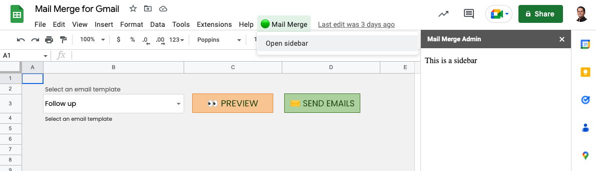

A Google Sheet sidebar is an extra pane that you can open alongside your sheets. It lets you manipulate the contents of the sheets from a centralized place.
I'll review the sidebar in the context of mail merge, a solution that I covered in previous posts. Mail merge has an admin sheet where the user can select an email template, preview the campaign, and launch the campaign. In this post, I'll migrate this functionality to a sidebar.
We'll start things off by opening our spreadsheet, accessing Apps Script from the Extensions menu, and creating a new HTML file (called Admin.html), with boilerplate code:
<!DOCTYPE html>
<html lang="en">
<head>
<meta charset="UTF-8" />
<meta http-equiv="X-UA-Compatible" content="IE=edge" />
<meta name="viewport" content="width=device-width, initial-scale=1.0" />
<title>Sidebar</title>
</head>
<body>
<p>This is a sidebar</p>
</body>
</html>We will launch the sidebar via a custom menu. So, let's add the code for that. Create a new Sidebar.gs file, and in it place the following code:
function onOpen(e) {
const ui = SpreadsheetApp.getUi();
ui.createMenu('🟢 Mail Merge')
.addItem('Open sidebar', 'openSidebar')
.addToUi();
}Google Apps Script relies on an onOpen() function declaration, spelled exactly like that, to execute code right after a Google Sheet is opened. Inside the function, we invoke the getUi method of the SpreadsheetApp to get a reference to the UI. We create a custom menu, use the addItem method to add a menu option. The method's first argument is the text that appears in the custom menu, and the second argument is the name of the function that should run when the user selects the menu option.
We'll now write the code for the openSidebar function:
function openSidebar() {
const template = HtmlService.createTemplateFromFile('Admin');
const html = template.evaluate().setTitle('Mail Merge Admin');
SpreadsheetApp.getUi().showSidebar(html);
}We create an HTML template using the createTemplateFromFile() method of HtmlService, passing to it the name of our HTML file. We create an HTML output using the evaluate() method of the template, and set a title. Finally, we get the UI object and invoke its showSiderbar() method passing in the HTML.
When we save our Sidebar.gs file and reload the spreadsheet (the Apps Script editor will close automatically), a new custom menu should appear. When you manually select the Show sidebar option, the following sidebar should appear:
We see our title and body text appearing, just as we entered it in our code. There is a close button at the top right corner that lets us close the sidebar.
Let's add HTML markup that mimics our current Admin sheet: We need a template dropdown, and three buttons: one to refresh the dropdown after we update the template files, one to launch the preview, and one to start the email campaign. Change the Admin.html file to have the following code:
<!DOCTYPE html>
<html lang="en">
<head>
<meta charset="UTF-8" />
<meta http-equiv="X-UA-Compatible" content="IE=edge" />
<meta name="viewport" content="width=device-width, initial-scale=1.0" />
<title>Sidebar</title>
</head>
<body>
<label for="templates">Select an email template</label>
<select name="templates" id="templates"></select>
<button id="update-templates">Refresh</button>
<button id="preview">Preview</button>
<button id="send">Send</button>
</body>
</html>One thing we note right away is that the template dropdown does not work, since it doesn't contain the template options. That is because the sidebar doesn't know what's happening on Google Drive. So we need to add a client-side function in our HTML to fetch the file names from the server. Add the following code right before the closing </body> tag:
<script>
const refreshTemplates = document.querySelector('#refresh-templates');
refreshTemplates.addEventListener('click', function () {
google.script.run
.withSuccessHandler(refreshTemplatesSuccess)
.getTemplateNames();
});
function refreshTemplatesSuccess(names) {
const select = document.querySelector('#templates');
select.querySelectorAll('option').forEach((option) => option.remove());
names.sort().forEach((name) => {
const option = document.createElement('option');
option.setAttribute('value', name);
const node = document.createTextNode(name);
option.appendChild(node);
select.appendChild(option);
});
}
refreshTemplates.dispatchEvent(new Event('click'));
</script>We do several things with this client-side script: First, we point refreshTemplates to our template refresh button, so that we can use it later. Next, we define an event listener for our Update button to use google.script.run, which is a way to execute server-side functions. We define a success handler function that will be called back once data arrives from the server. We call getTemplateNames() as the server-side function to run.
refreshTemplatesSuccess() receives the file names from the server. First the function removes any previous options that were added to the select element, in case we click on the button multiple times. Then the function creates a select option for each folder name and appends it to the select.
Lastly we dispatch a click event on the refresh button to trigger the server data pull.
We now need to define getTemplateNames() on the server, so in Sidebar.gs add the following code:
function getTemplateNames() {
const fileNames = [];
const files = DriveApp.searchFiles(`"${g.templatesFolderId}" in parents`);
while (files.hasNext()) {
const file = files.next();
fileNames.push(file.getName());
}
return fileNames;
}In this simple function we define a fileNames array. We then use the searchFiles() method of DriveApp to search for files that reside in a Google Drive folder that has the id that we defined in g.templatesFolderId (see previous posts about that). The file references are stored in the files variable. We use a while loop to get the actual files, and for each file, we get its name and store it in the fileNames array. Lastly, we return the fileNames back to the Sidebar Javascript. If you relaunch the sidebar, you should see the names of your template files populated in the dropdown:
Let's activate the other two buttons of the sidebar. In the Admin.html page, right before the </script> tag, add the following code:
document.querySelector('#preview').addEventListener('click', function () {
google.script.run.previewEmails();
});
document.querySelector('#send').addEventListener('click', function () {
google.script.run.sendEmails();
});This code adds two event listeners to our two buttons. When clicked, we once again use the google.script.run approach to execute the two server-side functions that we defined in the previous posts.
We can add styling to our Sidebar. Inside Admin.html just before the </head> tag, add the following code:
<style>
body {
font-family: sans-serif, Arial;
background-color: #eaf3f9;
color: #333333;
}
button {
border: none;
background-color: #5869ff;
color: white;
margin-right: 5px;
padding: 5px 7px;
width: 80px;
height: 30px;
cursor: pointer;
}
label {
font-size: 75%;
}
select {
border: 1px solid #5869ff;
background-color: #d0ecff;
height: 30px;
margin-right: 5px;
}
#preview,
#send {
margin-top: 10px;
}
</style>And that's all there's to it. We can go ahead and delete the Admin sheet, since its functionality now resides in the Sidebar.